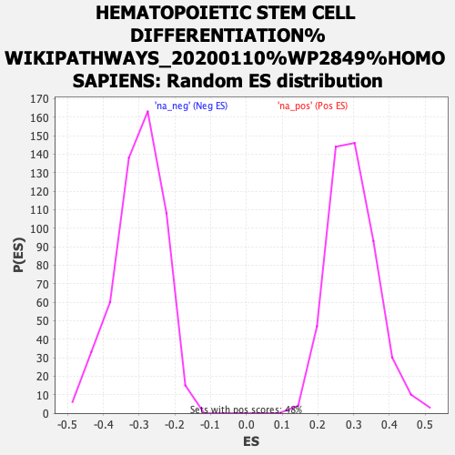

| | | Dataset | rankings |
| Phenotype | NoPhenotypeAvailable |
| Upregulated in class | na_neg |
| GeneSet | HEMATOPOIETIC STEM CELL DIFFERENTIATION%WIKIPATHWAYS_20200110%WP2849%HOMO SAPIENS |
| Enrichment Score (ES) | -0.67199665 |
| Normalized Enrichment Score (NES) | -2.2364354 |
| Nominal p-value | 0.0 |
| FDR q-value | 4.401052E-4 |
| FWER p-Value | 0.003 |
Table: GSEA Results Summary
Fig 1: Enrichment plot: HEMATOPOIETIC STEM CELL DIFFERENTIATION%WIKIPATHWAYS_20200110%WP2849%HOMO SAPIENS
Profile of the Running ES Score & Positions of GeneSet Members on the Rank Ordered List
| PROBE | GENE SYMBOL | GENE_TITLE | RANK IN GENE LIST | RANK METRIC SCORE | RUNNING ES | CORE ENRICHMENT | | 1 | CD34 | | | 418 | 2.588 | 0.0229 | No |
| 2 | ZNF835 | | | 3705 | 0.691 | -0.1690 | No |
| 3 | KITLG | | | 3887 | 0.641 | -0.1681 | No |
| 4 | LMO2 | | | 4438 | 0.506 | -0.1929 | No |
| 5 | ACVR1B | | | 5695 | 0.266 | -0.2662 | No |
| 6 | IRF5 | | | 5927 | 0.232 | -0.2762 | No |
| 7 | HES6 | | | 6738 | 0.114 | -0.3245 | No |
| 8 | RIOK3 | | | 6931 | 0.093 | -0.3348 | No |
| 9 | TNXB | | | 7148 | 0.066 | -0.3470 | No |
| 10 | MXI1 | | | 7268 | 0.050 | -0.3535 | No |
| 11 | GATA2 | | | 7548 | 0.022 | -0.3704 | No |
| 12 | STAT5A | | | 7981 | -0.020 | -0.3970 | No |
| 13 | ABO | | | 8736 | -0.116 | -0.4418 | No |
| 14 | THRB | | | 10882 | -0.457 | -0.5670 | No |
| 15 | LYL1 | | | 11089 | -0.499 | -0.5704 | No |
| 16 | CSF1 | | | 11777 | -0.644 | -0.6010 | No |
| 17 | TPO | | | 12031 | -0.698 | -0.6036 | No |
| 18 | FLI1 | | | 12110 | -0.721 | -0.5948 | No |
| 19 | NCKAP1L | | | 12259 | -0.766 | -0.5896 | No |
| 20 | NOTCH1 | | | 12887 | -0.946 | -0.6108 | No |
| 21 | CSF3 | | | 13425 | -1.129 | -0.6229 | No |
| 22 | RUNX1 | | | 14213 | -1.452 | -0.6445 | Yes |
| 23 | VAV1 | | | 14313 | -1.507 | -0.6222 | Yes |
| 24 | ITGB3 | | | 14341 | -1.520 | -0.5951 | Yes |
| 25 | CBFA2T3 | | | 14533 | -1.632 | -0.5761 | Yes |
| 26 | LEF1 | | | 14538 | -1.633 | -0.5455 | Yes |
| 27 | RHOH | | | 15053 | -1.941 | -0.5408 | Yes |
| 28 | NFE2 | | | 15173 | -2.037 | -0.5097 | Yes |
| 29 | SPI1 | | | 15228 | -2.096 | -0.4734 | Yes |
| 30 | CXCR4 | | | 15304 | -2.159 | -0.4372 | Yes |
| 31 | IKZF1 | | | 15310 | -2.164 | -0.3966 | Yes |
| 32 | PIM1 | | | 15345 | -2.192 | -0.3572 | Yes |
| 33 | NFATC2 | | | 15432 | -2.284 | -0.3194 | Yes |
| 34 | ITGA2B | | | 15447 | -2.308 | -0.2766 | Yes |
| 35 | FOS | | | 15527 | -2.416 | -0.2358 | Yes |
| 36 | TRAF3IP3 | | | 15590 | -2.500 | -0.1923 | Yes |
| 37 | CIITA | | | 15652 | -2.586 | -0.1472 | Yes |
| 38 | IL1B | | | 15778 | -2.784 | -0.1023 | Yes |
| 39 | FOSB | | | 15877 | -2.948 | -0.0527 | Yes |
| 40 | IL6 | | | 16002 | -3.423 | 0.0044 | Yes |
Table: GSEA details [plain text format]

Fig 2: HEMATOPOIETIC STEM CELL DIFFERENTIATION%WIKIPATHWAYS_20200110%WP2849%HOMO SAPIENS: Random ES distribution
Gene set null distribution of ES for HEMATOPOIETIC STEM CELL DIFFERENTIATION%WIKIPATHWAYS_20200110%WP2849%HOMO SAPIENS